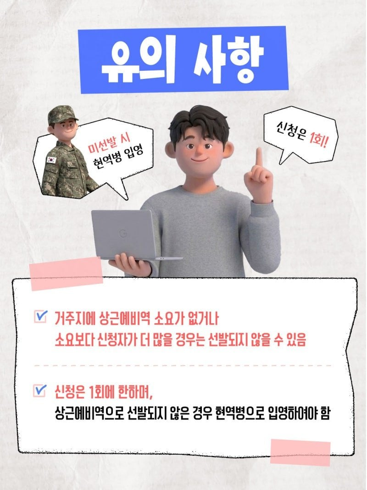
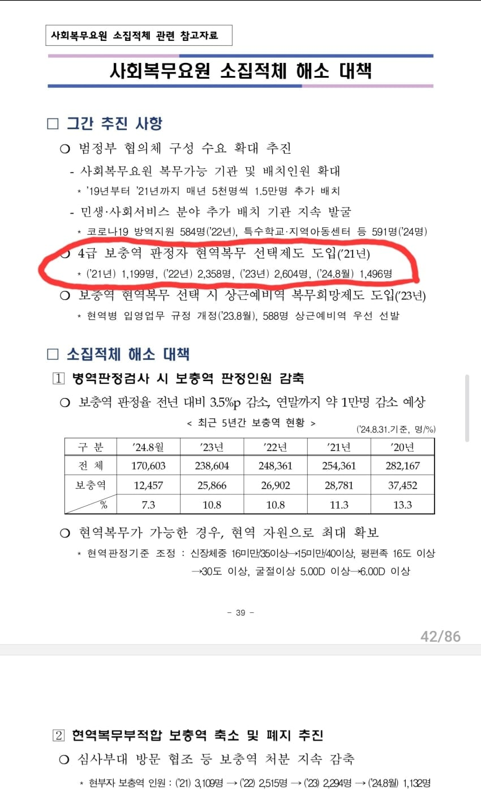
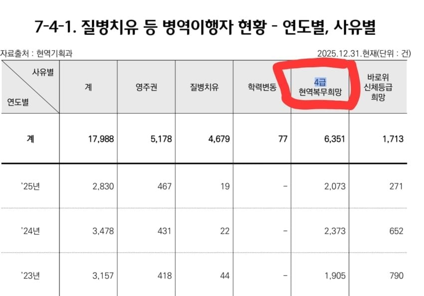

"신청은 1회에 한하며,
상근예비역으로 선발되지 않은 경우 현역병으로 입영하여야 함"



"신청은 1회에 한하며,
상근예비역으로 선발되지 않은 경우 현역병으로 입영하여야 함"
조삼모사
공익이 신청해서 떨어지면 공익이 아니라 현역ㅋㅋㅋㅋㅋ
애초에 왜 공익버리고 상근을감? 공익도 집근처 출퇴근이잖아
상근이 더 짧을걸
소집적체
그러니깐 장기대기자들용임
언제 소집될지 모르니깐
취업도 무작정 할수도 없어서 그냥 현역으로 가고 싶어할 사람중에서
상근 도전해보싈? 하는거지
그러기엔 리스크가 너무 큰데
안되면 현역 장난치나 ㅋㅋㅋ 병무청새기들 뭘 믿고 저걸 신청함? 신청하면 바로 현역 보내버릴듯
현역 희망자라고 적혀있잖아
원래부터 공익대상자중에 현역가고 싶어할 사람 대상이야
학교다니거나 일 다니면 장기대기자로 인정 안 해줄걸? 그래서 악질 소리 듣는거고
학교만 인정 안 해주고 일 다니는 동안은 인정임
상태 부대에서도 알테니 오히려 철판 깔고 이거저거 빼면 더 나을지도?
게다가 강제도 아니고 기간도 다를테니.
보내려는게 아니라
공익중에서 현역가고 싶어하는 사람들 대상이잖아
현역 희망자라는 글자는 안 보임?
현역은 그냥 가면 되는거아님? 요샌 가고싶어도 못가나? 나도 공익떴는데 아버지가 지랄해서 재검받고 현역갔는데
그거때매 복학기간 꼬여서 1년 날림
그 재검없이 공익도 바로 현역으로 지원해서 갈수있게 됨 21년부터
이 시스템에 상근으로 뽑힐 확률도 넣은거고
진짜 병무청은 터지는게 맞는거 아닌가 싶다....
야바위냐고ㅋㅋ
"상근예비역으로 선발되지 않은 경우 현역병으로 입영하여야 함" 가 존나 야랄이네 ㅋㅋㅋㅋㅋㅋ
ㄹㅇ 실패하면 현역가야됨 ㅈㄴ 함정임 ㅋㅋㅋㅋㅋ
어차피 현역희망자중에서 고르는건데 함정일수가
애초에 신검 공익판정 나올사람도 현역 가고싶어하는 사람은 저런거 안해도 이미 존나 건강한척해서 현역판정받고 갈듯
마지막 한명까지 죽이고 여자들만의 세계를 만드려는거냐
저거 명분 빌드업용 아니냐
강제징용국 이미지 지우려고 "현역과 보충역 사이에 선택권을 줬으니 국가로서 할건다했다" 식의 논리였던걸로 아는데
미선발시 현역 ㅇㅈㄹ하네 ㅋㅋㅋ
병무청은 한번 제대로 손볼 필요가있다
미선발시 처우악화는 머임 ㅋㅋ
어치피 느그들 아프다고 봐주는게 아니라
몸아프던 말던 뺑끼친다고 꼽주니까 바뀌는게 없지
병무청이 보이스피싱이냐 한강에서 바보찾기네
갸챠 확률 공개는 함?
미선발시 공익이면 꽤 수요가 있을거 같은데
그래도 공익출신 꼬리표가 평생 따라 붙는거라
어짜피 출퇴근 하는거면 상근병도 좋지
근데 미선발시 현역은 시발 ㅋㅋㅋ 누가 하냐 ㅋㅋ
어차피 현역희망자들중에서 하는건데
현역갈려고 했던 사람들은 해보는거지
국가가 하는 보이스피싱
이거 그 태국인가 병역가챠하는거랑 똑같은거 아님?
ㅈ단죄 ㅋㅋㅋㅋㅋㅋㅋㅋㅋㅋ
가챠겜은 확률을 알려줘야지.
미선발시 현역은 장난하냐 ㅋㅋㅋㅋㅋㅋㅋ
정신질환자 탈북자 귀화자 징병부터 시작해서 저딴 건 대체 누구 대가리에서 나오는 거냐
안그래도 병력자원 모자란데 아시안게임 그애는 가솔린을 쳐 부었네 ㅋㅋㅋ 알고보니 애국자였어...
병무청이 걔네 얼마나 달가워 했을까
진짜 이거다 싶었을꺼야ㅋㅋㅋㅋ
느금마다 씨발럼들아 ㅋㅋ
공익 대상자를 현역으로 보내는 거 자체가 문제가 있는 거 아닌가? 신체검사는 왜 하는 거야?
애초에 공익제도자체가 이상한거임
신검 4급 -> 군 복무에 부적합.
부적합이면 공익이 아니라 면제지
다른 애들 군대가는데 넌 공익이라도해야지라며 가스라이팅해서 값싸게 부려먹는거자너
자진입대를 환영한다